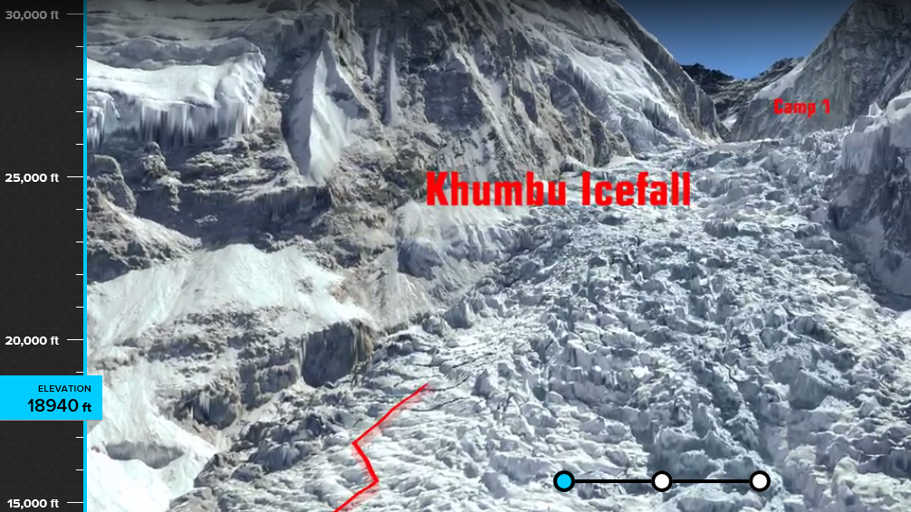
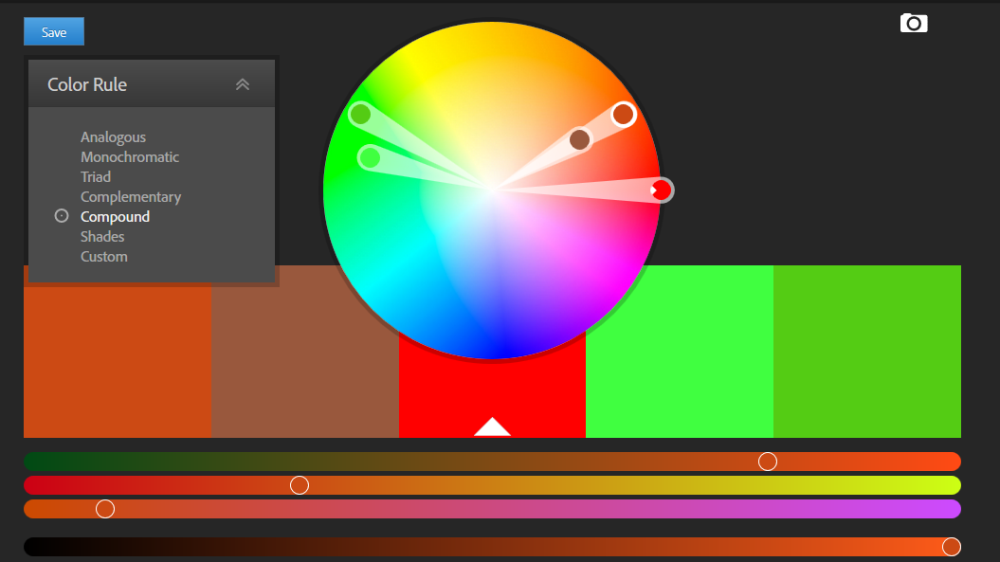

This website allows you to explore Mount Everest from home. It is user friendly and intuitive. When you click, the website stops moving. On the side, there is a measurement of how high up the mountain you are seeing. There is a selector at the bottom that allows you to skip ahead to the middle or end of the journey.
The Adobe color wheel is highly interactive. You select a color then choose from a variety of options, such as analogous, monochromatic, triad and more. On the bottom, there are sliders to select shades and hues.
